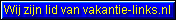

|
|||||||||
|
Op deze pagina plaatsen we nuttige links naar sites die verband houden met bergsport in Europa. Mocht u nog aanvulende informatie hebben dan vernemen we dat graag van u op:
Duitsland
- Deutschland - Germany |
||
|
|||||||||
Dem Sascha Seine Homepage: zeer verzorgde site met talrijke routebeschrijvingen en afbeeldingen van wandelingen (en hutten) in de Duitse Alpen. (DE)
Bergwandern in den
Bayerischen Alpen (DE)
Talrijke hutten en routebeschrijvingen.
ManyMaps (DE)
Hunderte von Wanderkarten, Radwegekarten und Straßenkarten, zahlreiche
Wanderführer, Reiseführer und vieles mehr für Freunde von Freiluftsportarten wie
Wandern, Klettern oder Radfahren und für Menschen, die einfach Wert auf gut
vorbereitete Reisen legen.
|
|||||||||
|
|||||||||
Alpenverein Südtirol (DE)
Südtirol
(DE)
Met foto's en info over hutten in Zuid-Tirol
13 Hütten tussen Brenner en Meran
Bormio Oline
(UK-DE-IT)
Zeer interessante site over Bormio en omgeving.
|
|||||||||
|
Oostenrijkse Alpinisten Club
Almenrausch (DE)
AlpinTouren-at
(DE)
Hutten en almen
Stubaital
Club Oostenrijk
Alpfoto (DE)
Kleinwalsertal
(DE)
Wandern
Tirol (DE-UK) |
||
|
|||||||||
|
Hutten van de Zwitserse Alpinisten Club (SAC - CAS)
Wandern und Trekking in der
Schweiz
(DE)
|
||
|
|||||||||

GRIEKENLAND - GRIECHENLAND
- GREECE
Orevatein
(Griekse bergsportvereniging)
Berghutten
in Griekenland (Grieks Toeristische Dienst))
SCHOTLAND - SCHOTTLAND - SCOTLAND
Buitensport -
Schotland (NL)
Nederlandstalige springplank voor bergwandelen,
ijsklimmen en rotsklimmen in
Schotland.
-----------------------------------------------------
DIVERSEN - ALGEMEINES -
MISCELLANEOUS
Jo's Hüttenliste (DE)
Zeer uitgebreide site met links over talrijke berghutten.
Seilschaft: Berge
online erleben (DE)
Wir laden dich zu
virtuellen Bergtouren ein
Stephan-Schwarzer
(DE)
Mein Gipfel und Hüttenbuch.
Via-Ferrata (DE)
Klettersteige in den Alpen
Meine
Wandertouren
Eine sehr gelungende Homepage.
The best ever seen.
Sion Valais Webcams in mountain regions.
AlpinTouren (DE) Forum und Links
Bergseite
(DE) von Paul Lechner
Bergsteiger (DE)
Heel wat nuttige informatie voor bergwandelaars.
Bergwanderungen
(DE)
Uiterst mooie site van Helmut Kammerer met talrijke routebeschrijvingen en
foto's van zijn bergwandelingen.
Bergnews (DE)
Site met nieuws uit de bergen
Bergwandertouren
(DE)
Bergwandern von Hütte zu Hütte in den Alpen und Dolomiten
Bergwandelen-
startkabel.nl (NL)
Link pagina met verwijzingen naar talrijke sites in verband met dit onderwerp.
Clasohm.com
(UK)
Site met prachtige foto's van Carsten Clasohm.
climbing-portal.com (DE)
Dietmars Heimseite (DE)
Prachtige site met talrijke fotoverslagen van beklimmingen.
Steve and
Judy Pardoe's climbing pages (UK)
Prachtige fotoreportages van beklimmingen en huttentochten.
VVVWW (NL)
Sfeerbeelden van verscheidene tochten in de Alpen.
ALPIN.de
Online magazine met heel wat nuttige informatie voor bergliefhebbers. Tourentips,
produktinformatie, toeristische informatie en veel, veel meer.
Monte Rosa Tour (UK)
Deze site biedt een gedetailleerde routebeschrijving van een trektocht in het
Monte Rosa gebied.
Bergsteigen.AT
(DE)
Interessante site met heel wat nuttige informatie voor de bergbeklimmer.
Rifugi e bivacchi
delle Alpi (IT)
Overzicht van de ligging van alle berghutten in de Alpen.
Berg-Album (DE)
Greep uit de 20.000 dia's die Mathias Zehring gedurende de laatste 20 jaar heeft
gemaakt.
Alpinfotos.de (DE)
Nog een site met prachtige foto's van wondermooie bergstreken.
Gletscherarchiv (DE)
Gletsjers smelten weg. We horen het meermaals, maar op deze site kan je de fotos
van vroeger en nu vergelijken. Resultaat: gletsjers smelten verschrikkelijk snel
weg !!!
Tour du Mont Blanc en
andere hikes (NL)
Een prachtige site van Rudi met duidelijke informatie en talrijke foto's.
Ice-X
(NL)
Indrukwekkende site van Boris Krielen met verhalen over de beklimmingen die hij
deed met als doel The Seven Summits te halen.
De Tweevoeter (NL)
De Tweevoeter neemt je mee naar de wereld buiten de bebouwde kom. Op deze site
vind je dagelijks nieuws, praktische informatie en achtergronden over wandelen,
landschap en natuur.
Pyreneeën Online
(NL)
Informatieve site van Ton Joosten over wandelen in de Pyreneeën.
The Mountain is the Limit.
(NL)
Deze site van Rudy Struyf is nog in volle opbouw, maar je vindt er nu reeds heel
wat informatie over bergen in de Alpen. De duidelijke opbouw laat u toe snel de
gewenste informatie op te zoeken. Een site met heel wat potentiëel.
On Top (NL)
Prachtige site van Peter Boers met verscheidene dagtochten in de Alpen en veel
afbeeldingen.
Natuurvrienden -
Bergstijgers (NL)
Mooie site met een aantal interessante reisverslagen waaronder Piz Badile en
Gran Paradiso. Ook nuttige info over drank en voeding.
Klimroutes (NL)
Een nederlandstalige site over verscheidene bergbeklimmingen in Frankrijk,
Italië en Oostenrijk
Hiking site (NL)
Zeer uitgebreide site met veel informatie voor wandelaars en trekkers.
Gentianen (NL)
Twee Gentse bergsportliefhebbers hebben heel wat nuttige informatie
over de alpen samengebracht.
FP-Site (NL)
Mooie site over diverse bergwandelingen.
Vakantiegenoegens
(NL)
Reizen, wandelen, fietsen, uitstappen,
bezoeken, kamperen, weekendjes uit..
WandelenBacob (NL)
Overzicht van de 250 beste wandelsites volgens Bacob
The
Climbing Dutchman (NL)
Prachtige en haast volledige site voor bergbeklimmers en wandelaars. Veel
randinformatie en nuttige links.
Vlaamse Bergsport en Speleologie Federatie (VBSF) (NL)
Bergsportvereniging
Provincie Antwerpen (BPA) (NL)
... stelt
zich tot doel om zijn leden goed geïnformeerd en lichamelijk voorbereid op
vakantie te laten gaan. Hiervoor hebben wij een volledig pakket aan opleidingen
(hooggebergte, klimschool, ...) en praktische informatie uitgewerkt.
Nederlandse Klim- en Bergsport Vereniging (NL)
Boogo-Links Portaal site voor bergsportliefhebbers. (NL)
Bergen &
Weer (NL)
Praktische informatie over de gevaren van een verblijf in het gebergte.
Berg-Dias (DE-UK)
Wegdromen bij prachtige afbeeldingen van beklimmingen in Europa, Azië en Amerika.
Bergfotos (DE)
Uiterst verzorgde site met talrijke foto's van bergen.
Mountain
Pictures (UK)
Een verzameling van prachtige afbeeldingen van toppen in de Alpen, Himalaya en
Zuid-Amerika.
Beklimmingen in de Alpen
(NL)
Wondermooie site van Bart Naert met talrijke beschrijvingen van zijn
beklimmingen. Meer dan 150 solo beklimmingen en bijna alle vierduizenders in de Alpen
!!!
Spiderke's homepage
(NL)
Klimsite van Bart de Kegel
Steinmandl (DE)
Indrukwekkende site met heel wat informatie over beklimmingen en wandelingen in
de Noordelijke Alpen.
Stephans Bergseite
(DE)
Prachtige fotosite van Stephan Braukmann.
Wandelpad.nl: een uitgebreide site voor wandelaars.
Bergwandelen in Europa: Info over wandelingen in diverse berggebieden van Europa. (NL)
De
Bergpalieters (NL)
De Bergpallieters is een vereniging voor
rotsklimmers en alpinisten uit Buggenhout
Wandel-pagina (NL)
Portaalsite voor de wandelaar.
Landgraafse
Alpine Club (NL)
Landgraafse Alpine Club (LAC) is een club met 25 man die geregeld de bergen
in gaan voor zowel normale touren als extreme beklimmingen
Bergsport:
(NL)
a way of life : een mooie site van Hendrik De Winne
Bergwandelen en
bergmarathon (NL)
Indrukwekkende site met verscheidene beschrijvingen van wandelroutes.
De vakantiewebsite van Lies en
Teije (NL)
Deze site bevat veel informatie voor wandelaars, ook in niet berggebieden en in
andere Europese landen.
Berggeit (NL)
Beloftevolle site in opbouw met verhalen over bergeklimmen.
Nivon
Bergsportgroep Amsterdam (NL)
met informatie over de vereniging, en de diverse 'takken':
alpinisme, rotsklimmen,
randonnée + trekking, wandelen